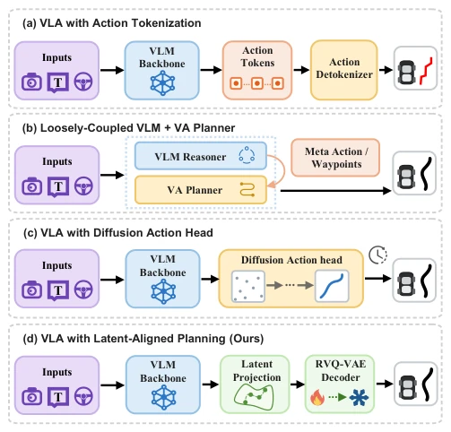
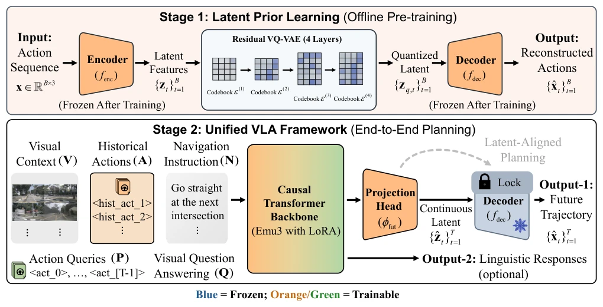
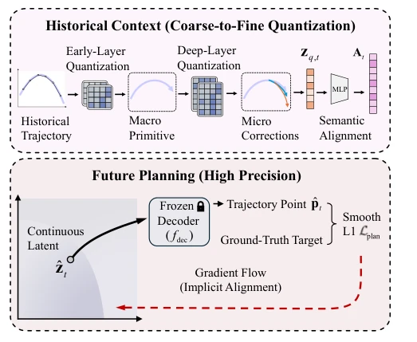
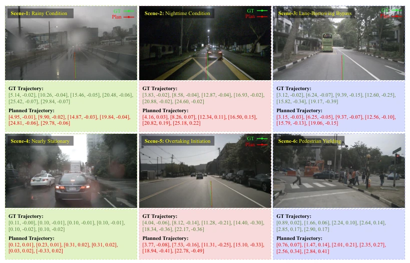

This paper takes a "cold stove" approach to VLA autonomous driving, attempting to forcibly inject discrete semantics into a continuous action space using a frozen VQ-VAE decoder. The name LaPla sounds quite plausible, essentially implementing a "latent space alignment". The advantages are obvious: it avoids quantization errors caused by discrete tokens like AutoVLA, and avoids wasting time on iterative denoising like Diffusion. However, with the decoder frozen, if real-world driving behaviors exceed the "comfort zone" of the pre-trained VQ-VAE, will this model become like "carving a boat to find a sword"? After all, physical priors are static, while road conditions are dynamic. However, given the 33% surge in success rate on AlpaSim, this strategy of "borrowing strength to strike force" indeed has merit, at least better than methods that forcibly discretize for alignment. It proves that under specific priors, continuous latent space prediction is more robust than discrete generation, but also exposes the risk of dependency on pre-trained data distribution.
The shift from modular to end-to-end in autonomous driving is a trend, but VLA models face a core contradiction: VLMs excel at discrete semantic reasoning, while driving requires actions with continuous physical constraints [1]. Existing solutions each have fatal flaws: Action Tokenization is unified but quantization errors amplify closed-loop errors, producing jagged trajectories [6]; Dual-system is decoupled but high-level semantics and low-level planning are temporally and spatially disconnected, making coordination difficult [7], [8]; Diffusion is smooth but has high inference latency and unstable training, making real-time deployment difficult [9]. LaPla aims to solve these pain points, especially cumulative errors and real-time requirements in closed-loop scenarios. It attempts to maintain VLM reasoning capabilities while constraining the action space via physical priors, avoiding the model "thinking too beautifully, driving too poorly". The fundamental problem lies in how to command the physical world's "body" with the large model's "brain" without disconnection; existing methods either sacrifice accuracy or speed.

Fig. 1. A comparison between existing VLA architectures and our approach. Action tokenization approaches suffer from quantization errors in trajectory generation. Dual-system designs incur a disconnect between high-level semantics and low-level planning, while diffusion-based action heads introduce computational latency from iterative denoising. In contrast, our architecture plans directly in a kinematically sound latent action space, enabling both efficient and smooth trajectory generation.
Overall divided into two stages. First, offline pre-train a residual VQ-VAE, using discrete bottlenecks to cluster trajectory space, freezing its decoder as a motion prior. Then construct a VLA framework, inputting multimodal context (vision, historical actions, instructions). Historical actions use quantized latent representations (coarse-grained), future actions predict continuous latents (fine-grained). The core innovation is "latent space alignment": VLM directly predicts continuous vectors falling into the frozen decoder input space, rather than discrete tokens. The decoder maps continuous latents to displacement and heading, eliminating quantization errors. During training, Smooth L1 loss supervises trajectories, VQA assists in enhancing semantic understanding. Additionally, the model introduces learnable perturbation vectors to generate diverse trajectory candidates, selecting the optimal solution via Best-of-N. This design allows the model to optimize strategies on known physical manifolds, rather than learning kinematics from scratch, significantly reducing optimization burden. Specifically, the VQ-VAE contains 4 residual layers, with codebook capacity increasing step-by-step, ensuring it can capture complete motion patterns from macro maneuvers to micro corrections.

Fig. 2. Overall framework of LaPla. Top: A pretrained residual VQ-VAE yields a frozen decoder 𝑓dec serving as a trajectory prior. Bottom: The VLA model ingests multimodal contexts and predicts continuous future latents {ˆz𝑡}𝑇 𝑡=1. Guided by a Smooth L1 loss, 𝑓dec decodes ˆz𝑡into future action trajectory {ˆx𝑡}𝑇 𝑡=1, achieving end-to-end latent-aligned planning.

Fig. 3. Asymmetric action representations. We employ discrete quantization as an information bottleneck to structure historical context in a coarse-to-fine manner, while predicting continuous latents for the future to prevent quantization errors and ensure high-precision trajectory decoding.
In open-loop tests on nuScenes, LaPla's long-horizon L2 error decreased by 15.52%, outperforming AutoVLA and OpenDriveVLA, with lower collision rates. In closed-loop AlpaSim simulations, success rate increased by 33.34 percentage points, FPS reached 1.582, significantly faster than AutoVLA's 0.532. Ablation studies show that freezing the decoder (M3) performs better than using only MLP (M1) or only VQ encoder (M2). Visualizations indicate the model has smoother trajectories in perception degradation scenarios like rainy nights, and can correctly execute lane change intentions. This proves latent space alignment can effectively mitigate long-horizon drift, but high collision rates also suggest its driving style may be too aggressive. Specifically under UniAD metrics, LaPla's L2 error is 0.60m, significantly lower than OpenDriveVLA-7B's 0.66m, and the advantage is more obvious in 3-second long-horizon planning.

Fig. 4. The open-loop planning performance of LaPla. Visualizations span diverse driving conditions including rain (Scene 1), nighttime (Scene 2), lane-borrowing obstacle avoidance (Scene 3), near-stationary traffic (Scene 4), urban overtaking (Scene 5), and pedestrian yielding (Scene 6). LaPla preserves trajectory smoothness under perceptual degradation and consistently captures the correct maneuver intent in tactical scenarios.